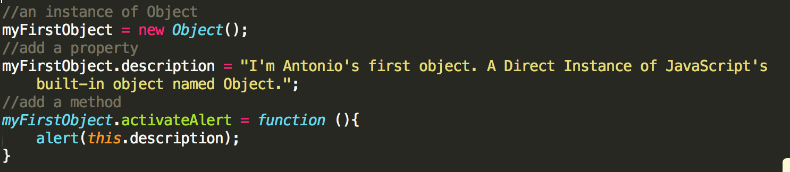
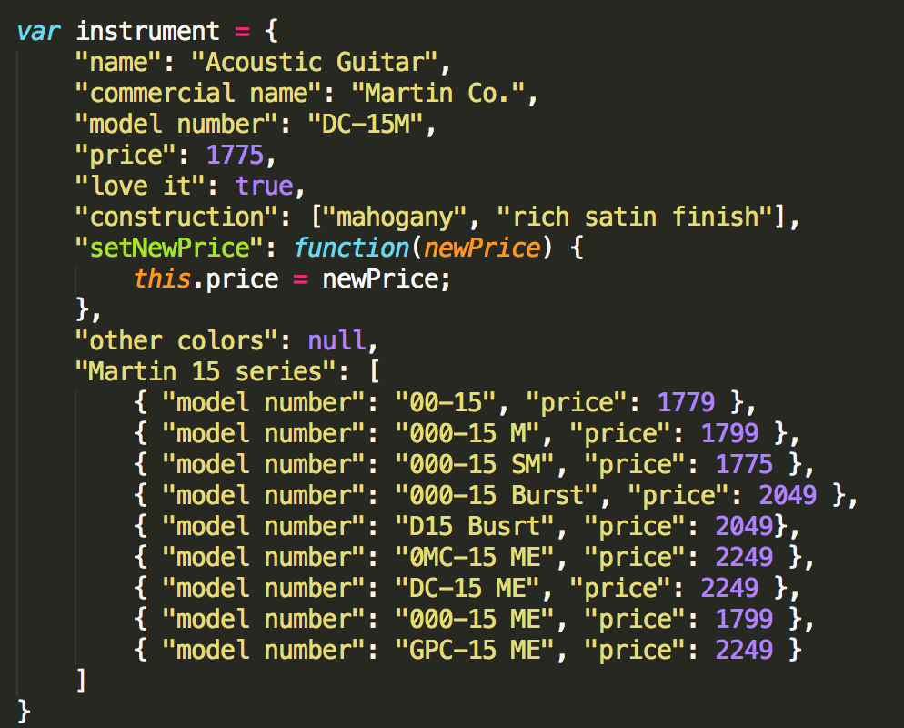
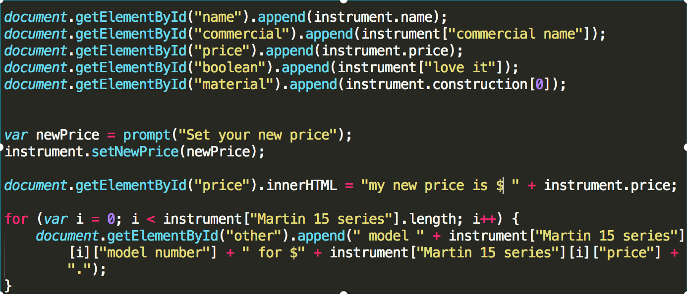
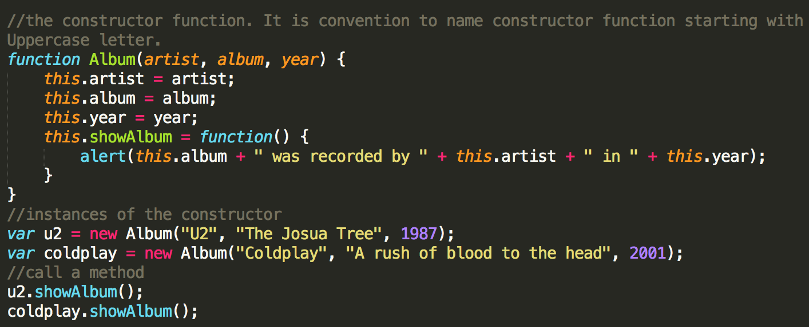
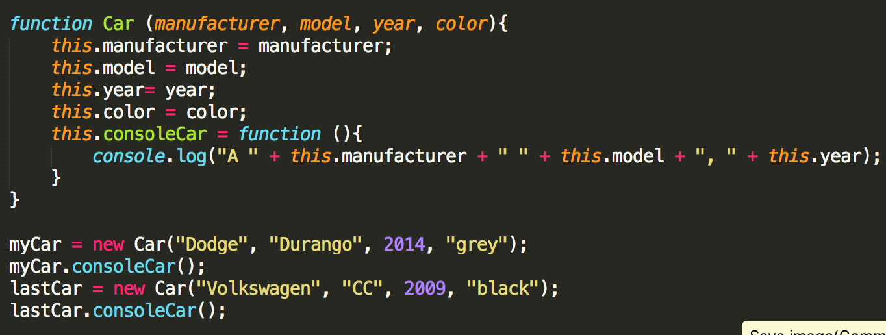
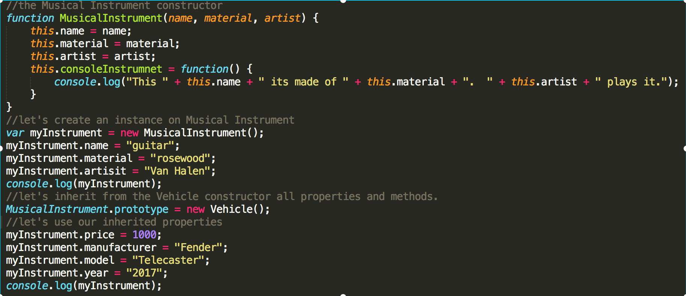

Capturing reality and expressing it in one way or another has lead to a variety of forms in which we conceptualy accept reality as a simplified abstraction of it. Software programmmers use the term Object as a mean to bring qualities of a real-world object into the realm of Programming. The Object concept is shared across several languages; for now we will focus on JavaScript only.
To understand what and object is, let's first start by looking at real world objects. Take a minute right now to observe the real-world objects that are in your immediate area. For each object that you see, ask yourself two questions: "What possible states can this object be in?" and "What possible behavior can this object perform?". As you do, you'll notice that real-world objects vary in complexity.
Let's begin our abstraction by capturing some of the characteristics found in a particular dog. Meet Thor's basic defining characteristics.
Our object can capture all of this. A JavaScript object is a value in memory which is possibly referenced by an identifier. An object is a mapping between keys and values, where keys are strings (or Symbols) and values can be anything. The actions that our object can perform are expressed as functions which are regular objects with the additional capability of being callable. This functions are called methods. Methods are defined functions within an object, that is they are not executed right away just defined.
In JavaScript we have a total of 7 data types and Objects are one of this data types.
In JavaScript we can create objects as a Direct Instance or by using a Contructor Function
Imagine you have a blank canvas. It is just a white background where you can start adding your content. JavaScript provides this empty canvas for creating objects. Indeed it is a built-in object simply called Object. To use it you just have to instantiate it like this. Notice we use the keyword new to create an instance of Object.
myFirstObject = new Object();At this point myFirstObject doesn't have any properties or methods. The code below shows how to add properties and methods. We use dot or bracket notation for that purpose. Below the image you can click on a button that will produce an alert. The callback triggered by clicking the button is a method of myFirstObject and the message shown in the alert is a text taken from the property description of the same object. Notice we use this to refer to myFirstObject.
JSON offers another way to create an Instance of Object. What we have here is a subset of JavaScript where a specific syntax is used. JSON data is expressed as a sequence of parameter and value pairs. The idea behind JSON is for data to be easily transmitted across networks or between applications. In the context of data storage and transmission, we use a process called serialization where we convert the data and express it as a string. This JSON-encoded string is now in a better format for transmission. Once the data has been transmitted we have to reverse the process by deserializing the string object. The advantage of all of this is that it is expressed in normal JavaScript. No need for parsers or converters.
There are a few rules to follow
Other than that you can store Number, String, Boolean, Array, null, methods and objects as a value. The image below shows a JSON Object containing all Data Types mencioned before. As an exercise we will try to capture a real-life object; a guitar. As we mentioned before, we can use dot notation or bracket notation. The difference between both of them is that if the object's property contains more than one word, then we must use [brackets] to access the property's value. If the property is only one word, then its easier to use dot notation.
Now that we have our JSON object. Let's spend a little bit of time on it. Remember, what is great about it is that this is all JavaScript. Let's access the properties in our instrument object.
Here we have some of the properties in our instrument JSON object
Let's take a look at how we get access to the properties.
In the previous section we mentioned how for tramission we need to convert our JSON data into a string in a process called serialization. To do that we use JSON.stringify(). If we covert our JSON instrument to a string the result looks like this:
This is our serialized JSON instrument:
As you can see this is great for transmission but horrible for humans to read. Luckily we have another method to desirialized a "stringified" JSON object back to a regular JSON object. JSON.parse(). Notice how when we parse the string, what we get back is NOT what we had before, what we have now is:
Before we saw how you can create a direct instance of Object. This is great for one object but, in the case where multiple instances are required, there is a better solution. We can use a Contructor function. A contruction function is use to create a blue print or template from which further objects can be instantiated. The way to achive this is by creating a regular named function. In its definition you can add all properties and methods you need for the "template". Then to create an instance from your constructor you simply use the keyword new in the same way you use it before to create a direct instance. Look at the code below.
Sometimes it is necessary to add properties or methods to objects that have already been instantiated. This can be done using the keyword prototype. Let's define a constructor function for cars. The Car contructor its originally formulated to include a car's color, year and manufacturer properties and a method to display these properties. If we instantiate this constructor, all car objects will reflect that information. But let's say later on we want to add more properties or methods to our Car contructor. We can use the prototype keyword for that. The code below shows the original Car contructor and the extension of the constructor with a new property and method to set up the price.
Now lets extend the Car constructor by adding a price property and a method to display it. Enter the new price for your car in the input area and click the button to see the updatePrice function in action. Remember, our original Car constructor had no price property or a function to update and display the new price. We've added this two properties using the keyword prototype.
Inheritance, is the capability to create one object type from another. This feature saves a lot of time as the newly created object will inherit the properties and methods of another. We can use the prototype keyword for this too. The process involves one constructor function and an object. For demonstration we will continue to use our Vehicle constructor. We have already created an instance named "myCar". Let's say we are involve in a new project. We are launching a new product and we realize that some of the properties from our Vehicle constructor also apply to it. This is where inheritance comes into play.
The first thing we can do is to create a new constructor with the properties that make our new product different from our Vehicle constructor. Our new line of products is for musical instruments. We've been told that our Musical Instrument constructor requires two properties that are unique. A property for materials used and a property for featured artist. Below is our Musical instrument constructor; a myInstrument instance; inheritance from Vehicle and its properties accessed by myInstrument. Don't forget to check the results in the console.
